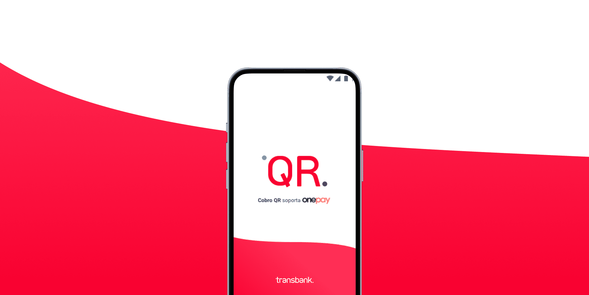
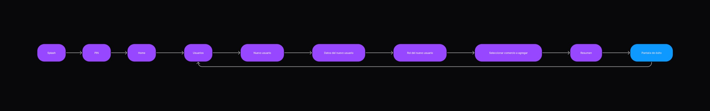
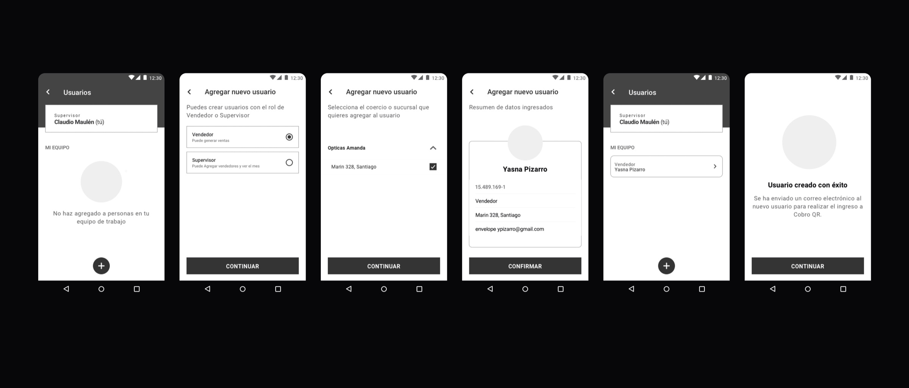
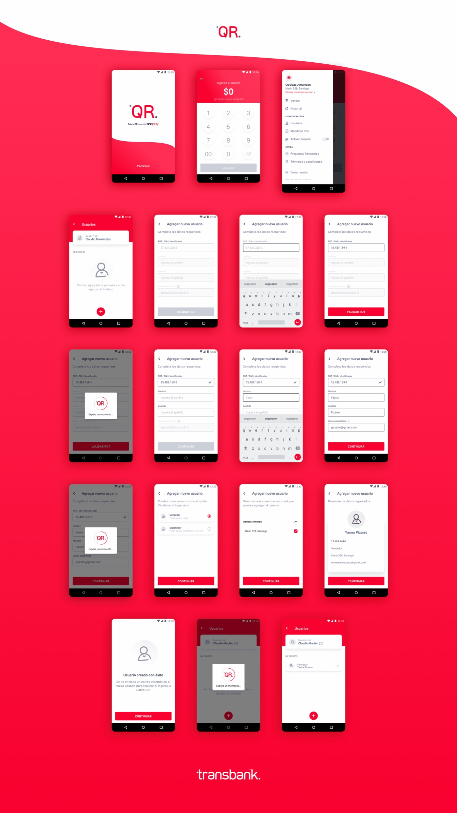

One business, different levels of access.
Adding user roles to Cobro QR so merchants could safely share day-to-day payment operations with their teams.

Cobro QR lets merchants collect payments from a phone by generating a QR code that customers scan with Onepay.
- Client
- Cobro QR by Transbank
- Role
- UI Designer
- Platform
- Mobile app
- Focus
- Roles and permissions
01 · Problem
The MVP assumed a single operator
After launch, research showed that many small-business owners worked with other people who also needed to use the app. A single shared level of access was not enough for the way these businesses actually operated.
The response was a role-management feature that allowed an administrator to add people to the business with access tailored to their responsibilities.
02 · Users
Three roles, three permission levels
Research validated the initial proto-personas and helped define the responsibilities of each role.
- AdministratorFull access to the business and its configuration.
- SupervisorCan add sellers and view monthly information.
- SellerCan collect QR payments and review recent transactions.

03 · Flow
Starting with the administrator
We mapped the administrator’s happy path first, then used it to understand how the supervisor and seller experiences should differ. The exercise clarified that only administrators and supervisors needed access to role creation; sellers did not need configuration or management permissions.

04 · Validation
Testing with business owners
We used the high-fidelity designs to test the new workflows with administrators and small-business owners. Participants understood how to add people to their business, and the simplicity of each step stood out during the interviews.
